環境保護
如何管理“惡臭污染”？
參考資料：- 每日頭條 2019/03/28: 國外惡臭污染管理辦法對我國管理體系構建的啟示
- 陽明大學： 異味物質之來源判定與管制
單一的排放標準已經不能滿足複雜的惡臭污染現狀，監測技術手段、評價方法以及污染控制與治理措施等配套管理規範的缺失，導致污染投訴取證難、污染情況評價難、污染問題治理難，嚴重阻礙了惡臭污染防治與管理的發展．
歐洲、美國等國家和地區從20 世紀60 年代開始針對惡臭污染開展分析和研究工作，制定了相關法律法規、評價體系、監測技術標準等一系列管理措施，構建了惡臭污染管理體系，並收到良好控制效果．
惡臭污染是一個非常複雜的問題: 一方面，異味是由混合氣味物質引起的，成分複雜、難於檢測;另一方面，氣味作為一種感官屬性具有明顯的主觀性，導致其評價存在較大困難． 為此，大多數國家和地區將多種管理方法綜合使用，確保法規標準、感官和儀器分析評價、控制技術及投訴機制有機結合，構建了「以防為主、防治結合」的管理體系． 這些方法具有豐富的實戰經驗，治理效果好，涉及法律法規、控制標準和評價方法三方面內容，具體包括
- 法律法規政策、
- 物質濃度無組織源排放標準 ( ambient concentration criteria for individual chemicals)、
- 臭氣濃度無組織源排放標準( ambient concentration criteria for odor)、
- 有組織源排放標準(quantitative emission criteria)、
- 技術標準( technology criteria)、
- 安全防護距離 (minimum separation distances)、
- 氣味強度範圍 ( odor intensity scales)、
- 氣味指數 ( odor index)、
- 投訴標準 ( complaint criteria)
- 綜合因素 (FIDOL)評價法
為什麼會有惡臭/異味？
異味物質之化學結構特性：異味物質之分子多因具剩餘電子，而有刺激人類嗅覺特性。具剩餘電子對之不飽合、含氧、含還原態氮、含還原態硫、含鹵素等碳氫化合物具特殊味道。
組成臭味之主要化學元素：碳、氫、 氧、氮、硫、鹵素
常見異味物質:
| 分類 | 名稱 | 味道 |
|---|---|---|
| 脂肪烴 | 1,3-丁二烯 | 瓦斯味 |
| 芳香烴 | 苯乙烯 | 塑膠味 |
| 含鹵烴 | 氯仿 | 醚味 |
| 含氧烴 | 乙醛 | 刺鼻味 |
| 丙酮 | 刺激性甜味 | |
| 乙酸乙酯 | 鳳梨香 | |
| 乙酸 | 醋酸味 |
| 分類 | 名稱 | 味道 |
|---|---|---|
| 含還原態氮化物 | 氨 | 氨味 |
| 甲胺 | 氨味 | |
| 三甲胺 | 魚腥味 | |
| 糞臭素 | 糞便味 | |
| 甲基糞臭素 | 糞便味 | |
| 含還原態硫化物 | 硫化氫 | 腐蛋、陰溝味 |
| 甲硫醇 | 瓦斯 腐菜味 | |
| 二甲基硫 | 腐菜味 | |
| 二甲基二硫 | 洋蔥味 |
臭氣的強度
- 0. 無臭
- 1. 勉強可感知的臭氣(檢知閥值)
- 2. 知道臭氣成分的弱臭氣(認知閥值)
- 3. 容易感知的臭氣
- 4. 強臭氣
- 5. 強烈臭氣
投訴標準
有效投訴機制的建立能夠真實反映該地區的惡臭污染情況，通過投訴和現場勘查記錄能夠統計全年的惡臭污染情況，確定該地區的主要污染源，有利於惡臭污染的管理與控制，對惡臭污染管理辦法的有效運作和惡臭污染的治理具有重要意義．
很多地區對投訴機制有明確的規定，如美國愛達荷州將投訴機制寫入法規，要求必須使用惡臭投訴管理系統處理農業源存在的問題． 此外，各地區投訴管理機制啟動條件的設置各有不同，如紐西蘭惠靈頓規定，當工作人員測定的臭氣濃度為10 OU/m3 或以上以及存在長期惡臭問題時執行相應的投訴管理機制;美國加利福尼亞州的投訴機制啟動條件是在一個周期內(每90天為一個周期) 接收到10 次或以上投訴或1天內同一污染源接收到超過5 次投訴以及未超過5 次但存在健康威脅．
當投訴機制啟動後，執行現場調查任務，各地區均規定了詳細的實施步驟． 以美國北卡羅萊納州為例，接到居民投訴後，工作人員記錄投訴問題和30天內的天氣情況，天氣情況由空氣品質總局提供． 現場勘察人員第一時間趕到現場，在相近的氣象條件下監測並記錄;調查周圍的情況，找到投訴人和企業認真了解情況後形成「污染情況報告」，交由空氣管理部門． 若發現存在污染，管理部門向企業提供治理意見，並要求在90天內治理完畢．
惡臭污染的管制標準：
1. 嗅觉测试标准方法主要包括欧盟的EN13725标准、美国的ASTM E679-04标准 和日本的三点比较式臭袋法。其中三点比较式臭袋法也是台灣现行的标准方法。
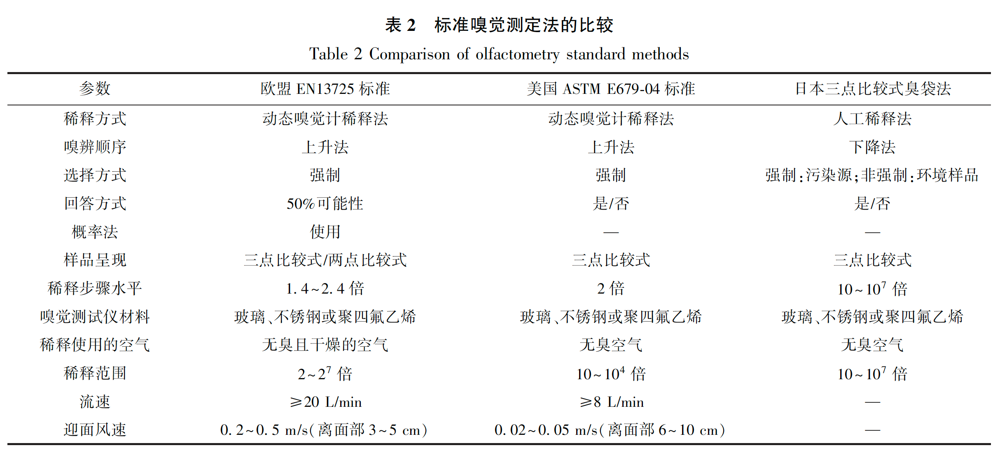
2. 各國對有異味物質的排放標準比較
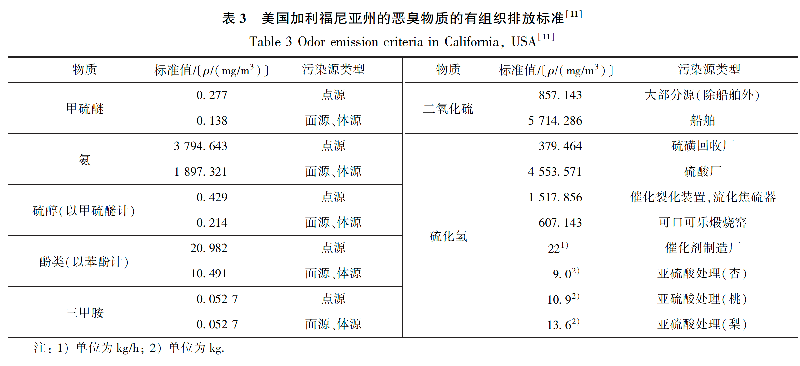
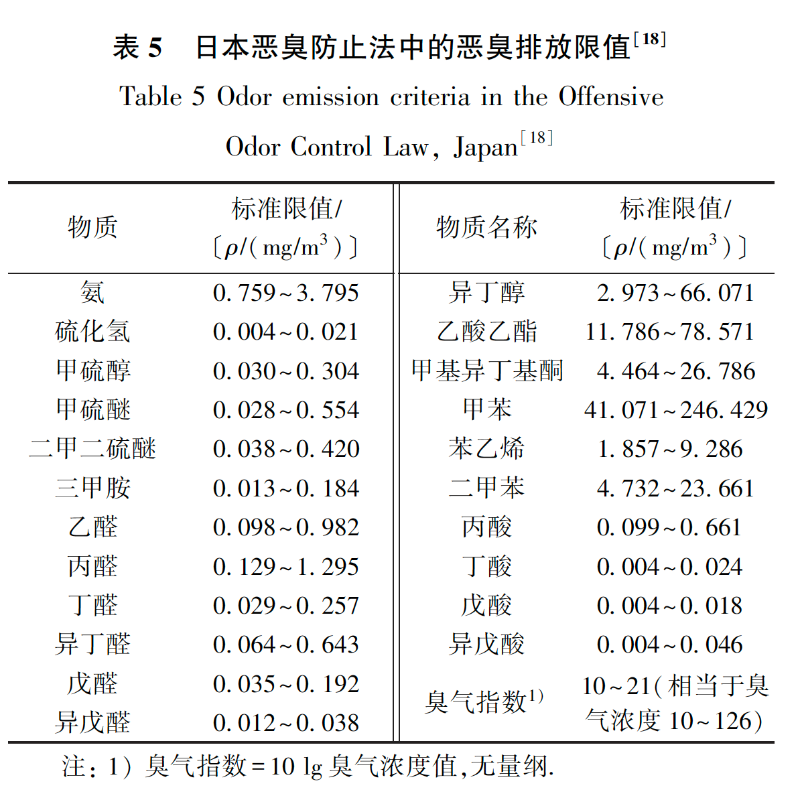
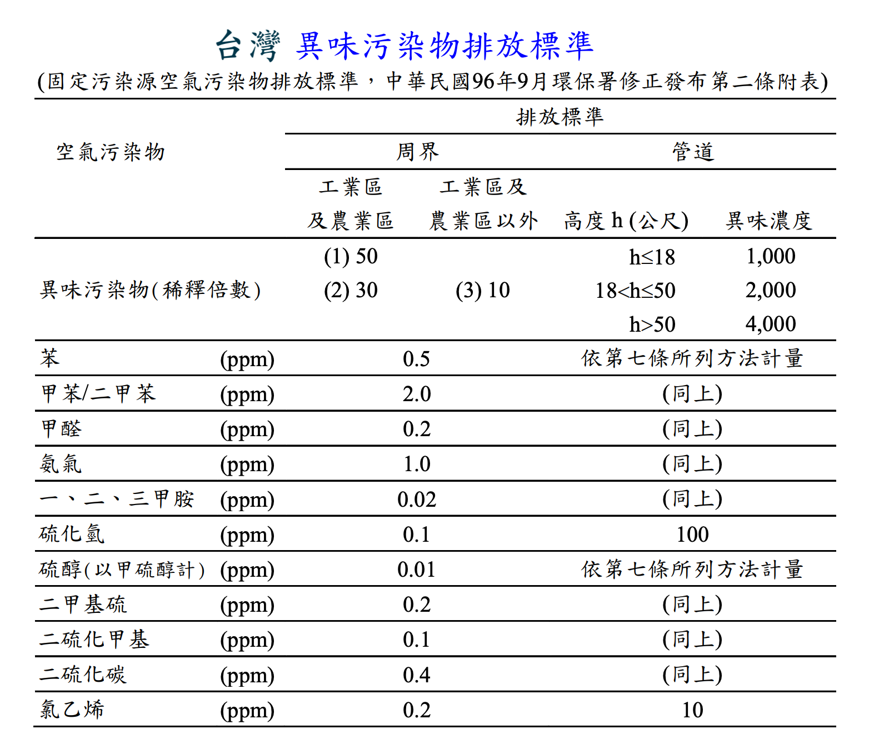
相關資料
空汙基礎知識/相關資訊網：- 國家衛生研究院 空氣污染懶人包
- 空氣污染簡介
- 維基百科 空氣污染
- 環境教育小百科 空氣污染概念圖解
- 桃園市 室內空氣品質資訊網
- 桃園市 空氣品質綜合管理計畫
- 天下雜誌 2020/11/06 空汙管制績效桃園市維護空氣品質精益求精 連續11年蟬聯全國空污防制特優城市
- 桃園市環保局 桃園市懸浮微粒物質災害潛勢資料
- 環保署 清淨空氣行動計畫 104-109年
- 台塑企業管理處 2017/01/10 何謂空污 – 台灣空污來源
- 桃園市環保局 2018/03/29: 空氣盒子揪空污 觀音違法業者送辦 - 桃園市環保局與行政院環保署目前於觀音工業區設置100個空氣盒子，結合物聯網科技能夠24小時即時監測PM2.5和揮發性有機物 VOCs，近日因觀音工業區附近常有民眾陳情有不明異臭味產生情形，環境污染監控中心利用所監測資料，先鎖定空氣污染排放熱區，並發現在特定監測點及時段，監測數值有呈現異常狀況，循線查獲業者違法事證。
- 高雄市環保局高雄市微型感測器資訊網 高雄微型感測器 監測項目包含PM2.5, PM10, TVOC 總揮發性有機物, 溫度，濕度, 與空氣盒子的差異, 與環保署監測站的差異。
- 高雄市環保局 微型PM2.5感測器介紹與裝設
- 環保署 95/07/21: 環保署將研修固定污染源臭味排放標準
- 中國生態環境部 恶臭污染物排放标准-征求意见稿
- 中國大氣網 2019/03/22：国外恶臭污染管理办法对我国管理体系构建的启示
- 工業除臭方案：“15类场所”「异味污染源」排查整治，如何在园区内有序开展？
- 產業綠色技術 臭味及有害物質污染物控制
- 臭气在线监测的实现：惡臭監測設備
- 異味污染物官能測定法 三點比較式嗅袋法
- 陽明大學 異味物質之來源判定與管制重要參考，建議閱讀
- 網路資訊 異味檢測標準
- ESCO 異味評估與控制
異味處理辦法
執行紀錄
進度- 2021/05/20: 於 FB-A7重劃區大小事貼文 社區網站:大家一起面對空汙 的呼籲，獲得 53% 瀏覽者的支持率。多謝網友的留言,轉發及點贊！！
- 2021/05/21: 在相同貼文 提出下列 異味改善辦法草案。 拋磚引玉 求教於各界, 尤其具備環保專業人士協助與指導。確認辦法草案後，執行上才有一致的共識！
- 2021/05/22: 龜山區牛煦庭議員已經回應將參與異味改善行動計畫。 更新的辦法草案及新增空汙防制基礎知識網頁。
發現有異味的地區住戶(依據舉報目前影響的是合遠新天地)，由管委會統籌統計有多少住戶受影響，向里長 舉報。依據去年環保局作業模式與里長建立Line 群組熱線管道提出案件舉報。(建議執行者:有異味發生的社區主委)
地方議員應該做的事包含：（讓我們一起向所有龜山區議員 發聲！）
- 向環保局要求，檢討2020年相關事件處理結果，了解為何去年在新聞媒體中發布的作業模式無法根本解決異味事件的發生。
- 要求環保局 提出對異味舉報案件處理成效報告。包含歷年舉報數趨勢，查出污染源的比例？處理成效分析。如何因應未來A7重劃區大量住戶進駐後引發更多的異味舉報事件？
- 檢討異味處理流程，是否使用例如三點比較式嗅袋法？並具備數據資料？確實有數據化蒐證？
- 對華亞園區異味要求規範為何？譬如華亞三路一側是園區另一側是住宅區，兩者要求的規範是否不同？環保局對異味舉報是依據那種標準？
- 對被舉報引發臭味的廠商，是否要求改善計畫？是否有持續追蹤改善作業流程？對反覆出現問題的廠商是否有因應對策？
- 多數被舉報廠商只能勸導改善嗎？使用哪一種標準？要求環保局提出我們規範與國際標準的比較 報告 包含舉報制度的檢討。
- 環保局去年聲稱會派專人主動處理臉書群組對異味問題的執行現況。
辦法草案
P-規劃-
法規依據：
- 環保署 空氣污染防制法 107/08/01 修訂
- 環保署 空氣污染防治法施行細則 109/09/18 修訂
- 環保署 異味污染物官能測定法 100/11/10 三點比較式嗅袋法 NIEA A201.14A
- 環保署 固定污染源空氣污染物排放標準102/04/25 修訂
- 環保署 VOCs 揮發性有機物空氣污染管制及排放標準 102/01/03 修訂
-
確定目標：
- 確定問題影響的確實地點，時間，發生頻率 等等 2021/5月 網路舉報主要地點 ：
-
依據 線上提報表 5/25日～27日 共收到15份異味提報，如下圖 異味熱點圖。統計要點包含
- 地點：出現異味的地區以華亞園區周遭為主（文化里）。如考量季節方向以華亞園區是主要固定污染源。
- 時間：異味出現在夏季，已是常態性 固定出現而不是偶發事件。
- 感覺：以塑膠味及酸臭味為主
- 主要地點：華亞三路 介於文化一路及文化二路之間的路段。如下圖 異味主要區域圖，包含當時風向圖
-
依據風場資訊 , 列舉可疑的風險來源包含：
- X環公司林口二,三廠： 以往污染紀錄 2013/08/02 製程-揮發性有機溶劑VOCs超標： X環公司林口廠製程使用大量染料、油墨、貼合劑等有機物料，且大多屬低嗅覺閾值之物種，一旦未經有效收集處理，即使微量逸散即可造成民眾感官上不適。以揮發性有機氣體光離子偵測器(Photo Ionization Detector, PID) 於排風口量測VOCs濃度為 2～30ppm。環保局依違反空氣污染防制法第23條第1項規定至少裁罰10萬元，並限期於一個月內提報改善計畫書，據以督促落實改善。
-
透明足跡 ｘ環公司林口三廠 裁罰紀錄
- 2020/11/17 光碟片製造程序(H6631-00號)污染源成型作業區(E201)、表面塗裝區(E101)、防制設備為洗滌塔(A106)運作中。檢測結果防制設備處理效率(削減率)為40.6%，未達操作許可核定揮發性有機物處理效率(削減率)應大於50%，未依許可證內容操作，核已違反空氣污染防制法第24條第2項之規定
- 2020/09/23 光碟片製造程序(M01)發現有使用正丙醇及四氟丙醇等原料於M01製程中，查109年上半年進料量分別為11,056.418kg及77,473.836kg。經確認其物質安全資表，沸點為攝氏97度及109~110度，屬於有機溶劑，惟許可證並未核定。
-
透明足跡 X環公司林口二廠 裁罰紀錄
- 2019/05/24 林口二廠係從事光碟片製造程序，領有本府核發固定污染源操作許可證，案經本府環境保護局派員前往稽查，現場作業中，查獲前揭製程至洗滌塔(A101、A103、A104)之間管線有空氣污染物逸散情事，未有效收集空氣污染物。
- 2018/09/20 空氣污染防制法第24條第2項 未領有本府核發之固定污染源操作許可證即逕行操作
- 環保署固定污染源管控：固定污染源管理資訊公開平台 / 林口特定工業區（工三）/ 華亞科技園區, 可查詢
- 各公司是否有污染空氣被處分紀錄
- 各公司的氣體排放檢測數據
- 各公司排放有害氣體的數量（法定容許範圍）
-
華亞科技園區 環境品質監督委員會 2020年 季報
第二季監測報告 109/4-6月,
第三季監測報告 109/7-9月,
第四季監測報告 109/10-12月
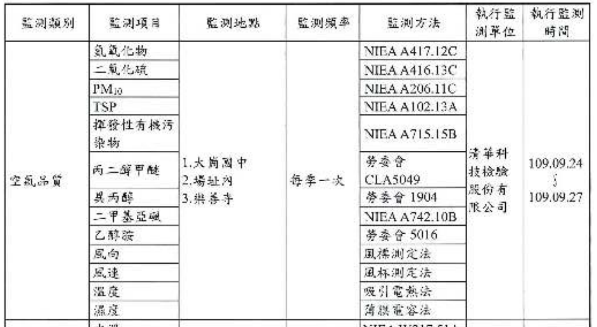
依據華亞園區監測季報，沒有發現超標。但需要檢討每季一次的監測是否流於形式？檢測標準在華亞園區與對街的住宅社區是否不同？
-
制定計劃：2020年計畫案範例
依據 自由時報 2020/09/11 華亞園區半夜惡臭 環局抽樣未超標 環保局對異味污染處理辦法
- 在有問題的地點建立監測點/檢測設備 強化空氣盒子功能，數據即時傳回環保局。
- 環保局依據監測數據，當時方向風速等環境資料。縮小搜索範圍, 查出固定污染源。
- 環保局建立機動巡邏人員，當監測點異常時，機動巡邏污染可疑範圍。使用官能檢測,如三點比較式嗅袋法, 找出污染源。
-
實施計畫：2020年實施範例
- 在華亞園區16家大型工廠建立24小時空汙自動監測設備, 由廠家自行管控空汙。
- 環保局在華亞園區建立66處空汙監測設備-空氣盒子, 資料將傳回環保局隨時監控園區空氣品質。並將數位化資訊公開透明提供居民查閱。
- 當上述設備無法檢測與“異味”有關聯的異味時, 由居民發現時可以由社區管委會自行調查受影響的住戶比例，時間等通知里長。里長/議員/環保局有LINE 專用通報群組。
- 環保局除與里長有熱線通報外,並派專人監看地區臉書社群是否有異味討論，主動通知環保局10個機動巡邏人員。機動稽查員須依據官能檢測 三點比較式嗅袋法 科學數據化找出污染源。
-
檢查跟蹤:
- 被標定為污染源的公司廠房，由環保局重點稽查與監測。直到徹底改善為止。
- 跟蹤監測所有數據數據化公布於環保局網站，並通知到社群網對居民做透明公開說明進度與結果。必要時由公正團體對企業做環保，社會責任及管理ESG 指標評比。
-
空污監測：
- 桃園全區域空氣質量： 實時空氣質量指數 AQI, 桃園空氣質量
- 華亞工業區空氣質量： 地方環保局/桃園華亞
- 華亞 空氣檢測數據 2021/4月份 檢測數據
-
簡易型空氣PM2.5及揮發性有機物 VOCs 監測： 空氣盒子
點擊下圖左右端，瀏覽不同時間林口及龜山的空氣盒子對比紀錄：
-
結果評估:
2020年 稽查效果檢討: 聯合新聞網 2020/09/13 異臭味空汙難稽查 桃市籲中央修法 異臭味稽查困難原因檢討- 桃園市工廠逾1萬2千家，臭異味公害陳情案件居高不下，民代認為市府環保局稽查結果與民眾感受有落差
- 局長呂理德解釋，空汙並非有異味就超標，檢測若符合排放標準並不能隨意處置，將建議中央修法。
- 環保局2020年2至6月受理公害陳情4200多件，空汙類占近5成，市議員陳雅倫說，龜山華亞科學園區是陳情熱點
- 環保局稽查科坦言，異臭味不易稽查，以華亞科為例，雖鎖定幾家可能的汙染源工廠，但稽查時都依許可操作，檢測也符合排放標準
2021現階段實施要點- 環保局應公告 去年 2020年全年有關異味居民提報案件數, 查到染源解決的件數.如果無法查出結果的困難在哪？
2020 環保署對異味舉報的處理結果如下：
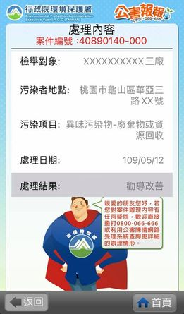
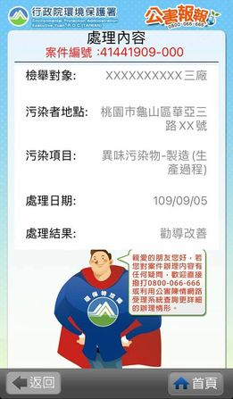
兩次都以勸導改善 輕輕帶過，沒有數據化 資料無法知道是否超標？ 超標罰則？ 沒有要求廠商改善計畫？ 沒有追蹤改善的機制？ 這些不是議員們需要努力監督的嗎？ - 空汙自動監測設備檢測數據與異味是否有關聯。也就是民眾檢舉意味時當時的各廠區或環保署自動檢測設備的數據是否有異常？
- 去年機動稽查小組在華亞園區稽查的成效如何？當民眾檢舉時出動稽查員的次數及稽查做法為何？是否有官能三點比較式嗅袋法,儀器或其他 檢測數據？
-
原因分析: 2021 現階段作業要點
- 請地方議員要求環保局提供依據多年來民眾舉報異味案件數及處理成效分析檢討報告。找出華亞園區異味不斷發生的主因。
- 請市府能正視此一民生基本問題，主動邀請學界環保專業人士提供改善建言。並協助環保局做出專業分析語改善方案。
-
改善措施：懇請龜山所有議員及立法委員督促桃園市政府強化下面要點列入施政重點項目。
- 由市政府推動華亞園區廠商全面建立空氣污染的環保作業流程。強化廠商在 環保, 社會責任及管理ESG 指標管理。包含
- 某公司在近年來因VOC排放違規, 不斷被處分。應該是住戶反映異味的主因。應該由環保局，華亞園區監察單位建立聯合改善督導小組。督導主要固定污染源限期改善。
- 環保局應該尋求環保署專業協助，提供廠商在製程管控VOC的改善辦法建議。並督促廠商建立標準作業規範，建立VOC排放總量管制並公告排放改善紀錄。
- 台塑關係企業：廠區異味及VOC污染防治管理作業要點
- 請參考 認識VOCs 中相關參考資料
- 由市政府廣邀專業學界對空汙，異味等環保議題提出改善建議與做法。廣邀民間具專業背景的志工參與相關事務的推動及執行。包含
- 由環保局建請中央環保署能統籌 檢討 我國對VOCs 等空汙物質管控法令是否過鬆？檢討及借鏡國際處理異味的相關配套措施。包含安全防護距離, 投訴標準及作業流程等等
- 依據天氣風向，建立華亞園區 VOCs 排放管制及分佈區域模型建立。檢討住宅區與工廠區是否保持足夠的安全距離。減少重劃區住戶對異味情情事件的發生。
- 陽明大學 紀凱獻教授: 異味物質之來源判定與管制
- 請參考 認識VOCs 中 財團法人台灣產業服務基金會 相關文獻
-
市府建立桃園市空氣品質改善計畫，列入施政重點項目。在空氣品質計畫中納入異味的管控，提高異味管控標準。空氣品質改善計畫範例
- 桃園市 空氣污染防制計畫109年 - 112年
- 新北市 空氣污染防制計畫 109 至 112 年版
- 由市政府推動華亞園區廠商全面建立空氣污染的環保作業流程。強化廠商在 環保, 社會責任及管理ESG 指標管理。包含
-
預防機制:
- 建立空汙/異味的 監測站 , 做有效的防範措施。
- 由市府在住家與工業區/科學園區並存的地區, 加強設立具備TVOC偵測的有效設備佈建如空氣盒子/微型偵測儀等。同時針對高風險廠區需要建立高精密TVOC監控設備，由環保局依據數據做有效管控。 才能讓重劃區房市升值，是萬民之幸！
認識揮發性有機化合物VOCs
什麼是揮發性有機物VOCs?
揮發性有機物(Volatile Organic Compound, 簡稱VOCs)是一大類有機化合物的總稱，在常溫常壓下容易蒸發或以氣體形式存在。常見包括苯、甲苯、三氯乙烷、甲醛等。揮發性有機物的危害很明顯，當居室中揮發性有機物濃度超過一定濃度時，在短時間內人們感到頭痛、噁心、嘔吐、四肢乏力；嚴重時會抽搐、昏迷、記憶力減退。揮發性有機物傷害人的肝臟、腎臟、大腦和神經系統，其中還包含了很多致癌物質。室內空氣被揮發性有機物污染已引起各國重視。
總揮發性有機化合物 TVOC:
TVOC是指室下飽和蒸氣壓超過了133.32pa的有機物,其沸點在50C至250C,在常溫下可以蒸發的形式存在於空氣中,它的毒性、刺激性、致癌性和特殊的氣味性,會影響皮膚黏膜,對人體產生急性損害。世界衛生組織(WHO)、美國國家科學院/國家研究理事會(NAS/NRC)等機構一直強調TVOC是一類重要的空氣污染物。
TVOC: 總揮發性有機化合物（TVOC，包含：十二種揮發性有機物之總和）：指總揮發性有機化合物之標準值係採 計苯(Benzene)、四氯化碳(Carbon tetrachloride)、氯仿(三氯甲烷)(Chloroform)、 1,2-二氯苯(1,2-Dichlorobenzene)、1,4-二氯苯 (1,4-Dichlorobenzene) 、二氯甲烷 (Dichloromethane)、乙苯(Ethyl Benzene)、苯乙烯 (Styrene)、四氯乙烯(Tetrachloroethylene)、三氯 乙烯(Trichloroethylene)、甲苯(Toluene)及二甲苯 （對、間、鄰）(Xylenes)等十二種化合物之濃度測 值總和者。
甲醛:化學式是HCHO，天然存在的有機化合物。有特殊刺激氣味的無色氣體，對人眼、鼻等有刺激作用 ，主要應用在塗料。可以上維基查甲醛會有很多相關的資料。
台灣對於甲醛濃度標準是在室內空氣一小時的累積測值小於0.08 ppm。TVOC的濃度標準是在室內氣一小時的累積測值小於0.56ppm。
甲醛的危險性:甲醛是最常見的空氣污染氣體， 目前甲醛已被世界衛生組織確定為致癌和致畸型物質，室內濃度達0.5 mg/m3會使人體產生流淚及眼睛異常敏感的症狀 ， 長期接觸低劑量甲醛可引起慢性呼吸道疾病，引起鼻咽癌、結腸癌、腦瘤、細胞核基因突變等 甲醛若在空氣中的濃度超過0.1 mg/m3，會導致眼睛和黏膜細胞的傷害。在體內，甲醛可能導致蛋白質不可逆的與DNA鍵結。動物實驗顯示暴露在大劑量的甲醛中會使得鼻子與喉嚨致癌的機率增加。
防治上窒礙難行的問題摘錄
引述來源：從VOCs管制看空污治理的新趨勢與新想像2016/01/181. 與管控PM2.5一樣重要：揮發性有機化合物(VOCs)
揮發性有機物(Volatile Organic Compounds, VOCs)管控問題:，在科學不確定性與法規制度的影響下，目前難以了解與釐清的污染排放狀況。
VOCs是重要形成衍生性PM2.5的貢獻來源之一，化學物質（可能是固體、液體或氣體）等前驅物，在大氣環境中經過一連串極其複雜的化學變化與光化反應而成的衍生性PM2.5。若欲有效治理PM2.5的空氣污染問題以及維繫人體與生態的健康和永續，VOCs管控與了解亦屬極為重要。
2. 管控VOCs排放量的治理困境
VOCs本身揮發易變的特性、推估計算VOCs的科學不確定性，再加上我國專業審查制度的行政妥協、多重管制法規的使然與裁量權限的彈性等因素交纏，導致了科學數字出現多重且不斷更迭變動的政治性空間（杜文苓、張景儀，2014）。
行政機關在推估與掌握污染數據時，更受制於科學的可行性、人力以及財政資源的分配窘境，而無法釐清污染排放的真實現狀，而呈現出非決策制定的管制延宕氛圍（張景儀，2014）。
3. 國際治理的趨勢：複合型態的空氣污染治理與公民科學
對於政府部門來說，管控大氣中的危害性有毒物質將必須涉及許多公共機關，而非由單一機關統籌與執行便能夠解決，這類決策應該被視為一種複合性的管制政策（杜文苓、張景儀，2015）。
國際社群便發展出以社區為主的行動科學，或稱公民科學(citizen science)，藉由低成本、簡易型態的收集空氣方式，來分析在地空氣品質的有毒物質監測。此過程即是嘗試打破公民參與環境檢測監督的技術門檻，運用科學的普及與民主，協助管制機關掌握更為貼近事實的證據，並從中建構出對於空氣污染問題的另一層理解，並亦有契機打開新的政治對話機制與空間。
複合式的空氣品質管理政策與公民科學等概念，是認為在當今空氣污染的科學複雜性與跨域性（王瑞庚，2015）等因素下，我國空污治理與管制過程應不再是過往的傳統分權制度或是交由單一環境權責機關進而統籌與管制，因為在科學不確定性下將可能難以釐清或建構出我國目前空氣污染的現況。如能包含更多元參與的方法，便可促進空污監測的透明性、民主性與課責性，更可促進民主治理的實踐（杜文苓、張景儀，2015）。
參考資料
- 風險社會與政策研究中心 2016/01/18: 從VOCs管制看空污治理的新趨勢與新想像 推薦閱讀
- 財團法人台灣產業服務基金會:
- iCoat Technology: 甲醛對人體的影響？
- 維基百科: 揮發性有機物
- 環保署 揮發性有機化合物與你
- 加拿大 HealthLinkBC 揮發性有機化合物 VOCs
- 揮發性有機物VOCs的治理規劃 推薦閱讀
- 有機揮發物VOCs氣體檢測介紹
- 揮發性有機物污染治理技術進展
相關規範
- 環保署: 揮發性有機物空氣污染管制及排放標準 102/01/03 修訂
- 環保署：固定污染源揮發性有機物自廠係數（含控制效率）建置作業要點 98/07/03 發布
-
桃園市室內空氣品質資訊網 室內空氣品質標準規定 101/11/23 發布
項目 類別 標準 單位 二氧化碳 CO2 8小時平均值 1000 ppm 一氧化碳 CO 8小時平均值 9 ppm 甲醛 HCHO 1小時平均值 0.08 ppm 總揮發性有機化合物 TVOC 1小時平均值 0.56 ppm 細菌 Bacteria 最高值 1500 CFU/m3 真菌 Fungi 最高值 1000 CFU/m3 PM10 24小時平均值 75 µg/m3 PM2.5 24小時平均值 35 µg/m3 臭氧 O3 8小時平均值 0.06 ppm - 台中市 環保局 101/05/30：揮發性有機物空氣污染管制及排放標準 宣導說明
- 中部科學工業園區 VOC 增量抵換模擬報告
- 中國GB：揮發性有機物VOCs標準
-
每日頭條 2017/03/23: 国际建筑涂料挥发性有机化合物(VOC)与排放标准答疑
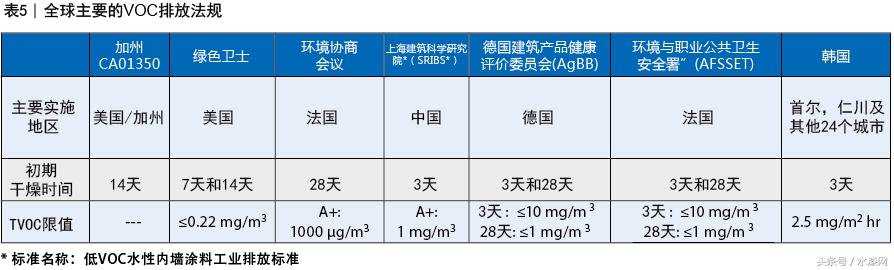
全球主要VOC排放規定
-
每日頭條 2018/08/02 拿到室內空氣檢測報告，你會看嗎？
室內 甲醛 TVOC 標準污染狀況 甲醛 mg/m3 TVOC mg/m3 安全 < 0.04 < 0.3 輕度污染 ≥ 0.04 and <0.1 ≥ 0.3 and < 0.6 中度污染 ≥ 0.1 and < 0.2 ≥ 0.6 and < 1.2 重度污染 ≥ 0.2 ≥ 1.2
VOCs 檢測設備
- LinkIt™ 7697空氣盒子: Grove-VOC &anp; eCO2 感測器 SGP30
- 儀器中心 異味氣體之監測
- EDIMAX 訊舟 AI-1001W V3AirBox 空氣盒子 PM2.5, 溫度，濕度檢測
- 高雄環保局 空氣微型感測器
- 台南市環保局 109/12/04: 漫談空氣品質微型感測器, 台南市空氣品質感測物聯網監測資訊
- LASS 社群 PM2.5開放資料入口
- 台北市 智慧環境 空氣盒子應用實證計畫
環保署空氣品質監測
環境即時通 - 綠生活地圖
手機APP 下載, 請掃描下面QR Code|
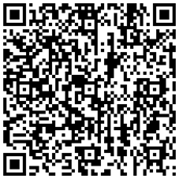 |
|
| Google Play | App Store |
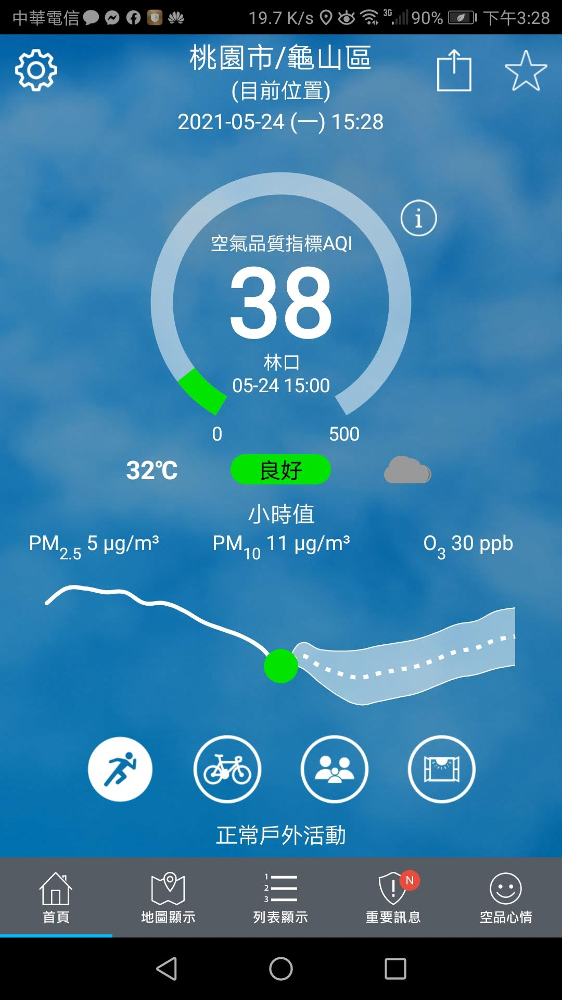
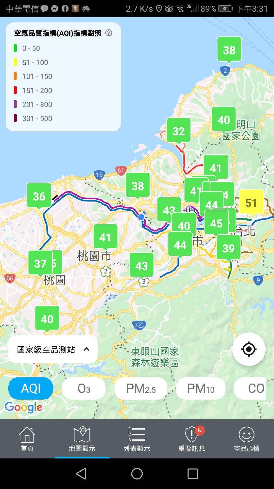
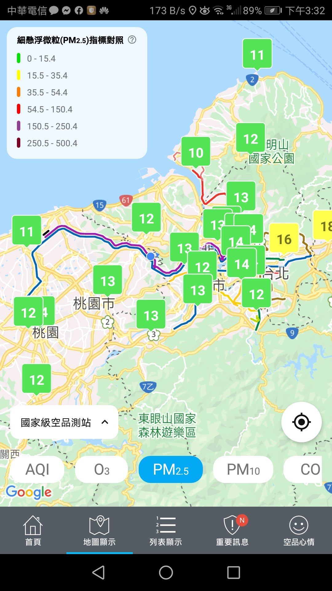
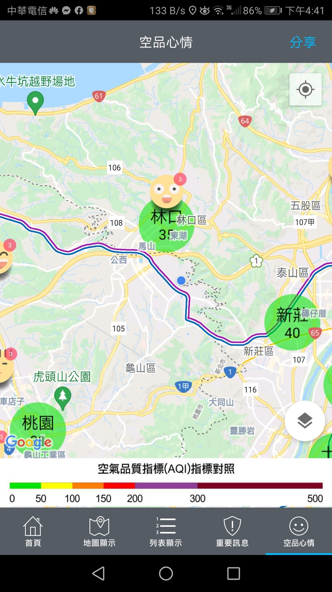
愛環境
環保署 愛環境 資訊範例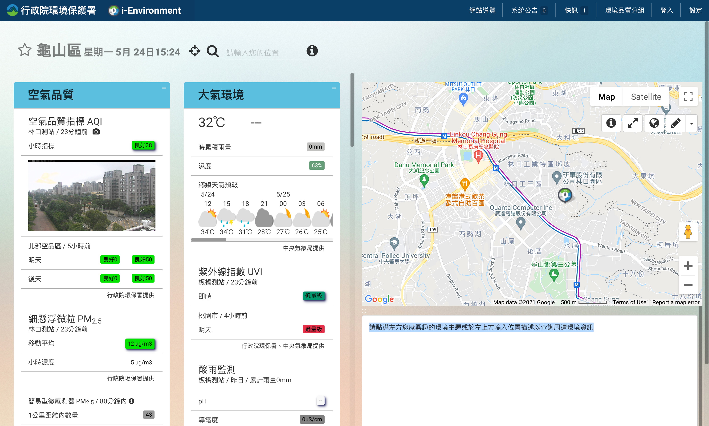
由此網站可查詢附近地方列管中的 環境污染源，公害陳情案件數（目前顯示 107年度 資料？？）及最近地區的 空氣PM2.5, PM10 等資料
但須注意資訊中空汙陳情的項目似乎都以黑煙為主，異味污染並沒有被列管或列入陳情項目？表示“惡臭污染”仍需大家共同努力提高政府/民意代表對此議題的重視！！！
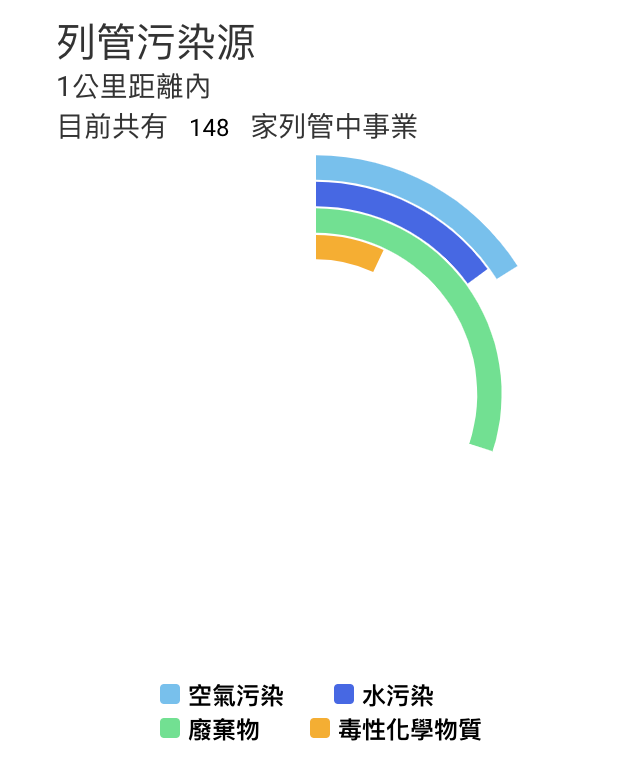
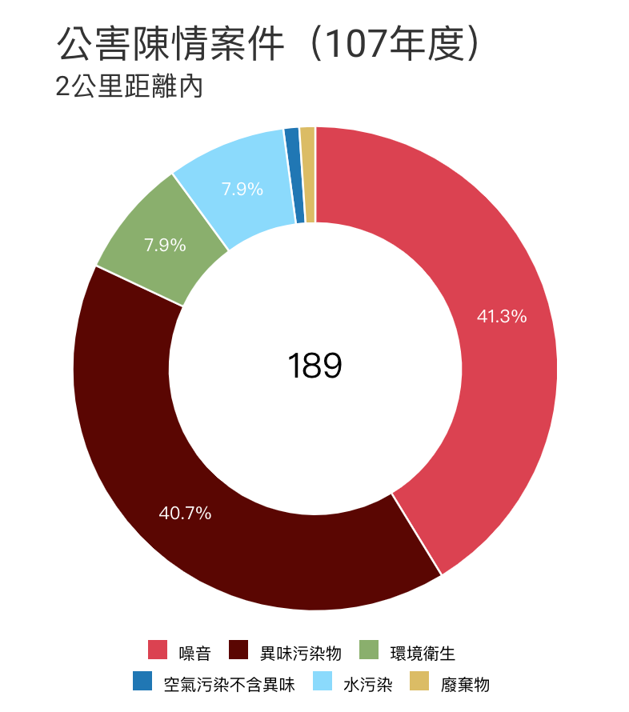
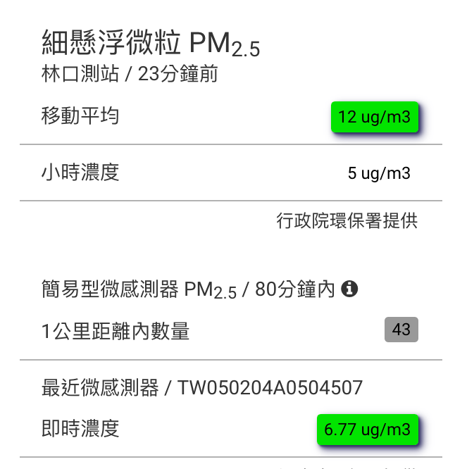
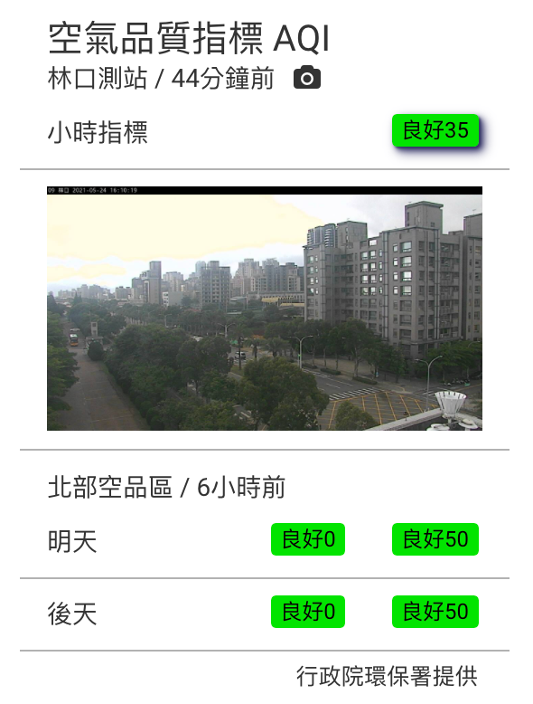
空氣質量指標
空氣質量指標 Air Quality Index, AQI：依據監測資料將當日空氣中臭氧(O3)、一氧化碳(CO)、二氧化硫(SO2)、二氧化氮(NO2)、懸浮微粒(PM10)及細懸浮微粒(PM2.5)濃度等數值，以其對人體健康的影響程度，分別換算出不同污染物之副指標值，再以當日各副指標之最大值為該測站當日之空氣品質指標值(AQI)。AQI 對人體影響：
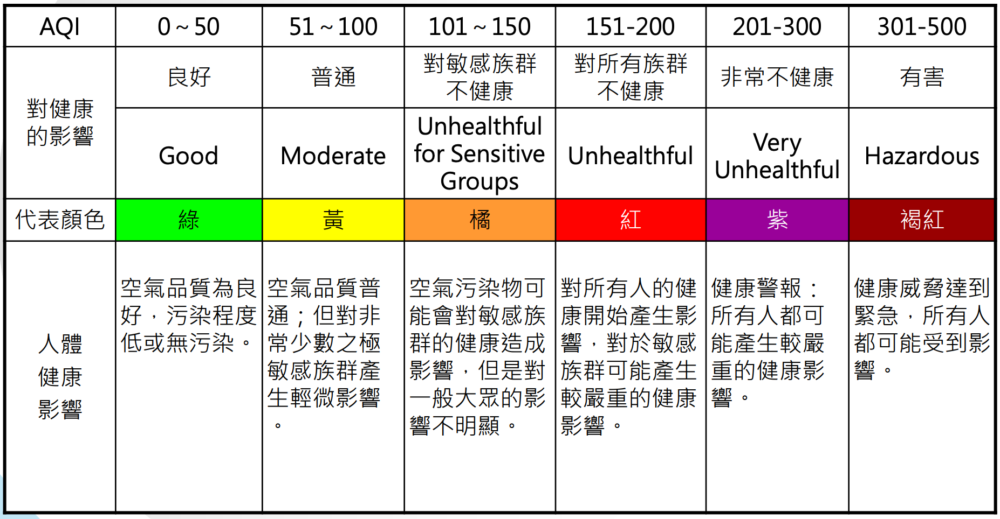
環保署 2019/9/18 空氣污染物標準規定
| 項目 | 類別 | 標準 | 單位 |
|---|---|---|---|
| PM10 | 日平均值 | 100 | µg/m3 |
| 年平均值 | 50 | ||
| PM2.5 | 24小時平均值 | 35 | µg/m3 |
| 年平均值 | 15 | ||
| 硫氧化物 SO2 | 小時平均值 | 0.075 | ppm |
| 年平均值 | 0.02 | ||
| 氮氧化物 NO2 | 小時平均值 | 0.1 | ppm |
| 年平均值 | 0.03 | ||
| 一氧化碳 CO | 小時平均值 | 35 | ppm |
| 8小時平均值 | 9 | ||
| 臭氧 O3 | 小時平均值 | 0.12 | ppm |
| 8小時平均值 | 0.06 | ||
| 鉛 Pb | 三個月移動平均值 | 0.15 | µg/m3 |
戶外空氣品質標準
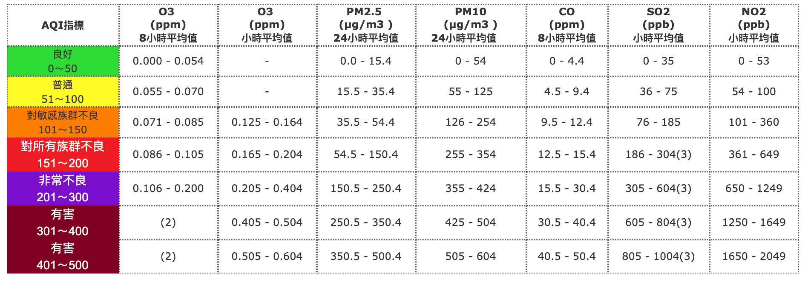
PM2.5 標準
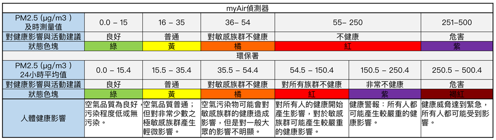
空汙資訊網站
-
天下雜誌 假數據真空污 煙囪排放違規 華亞氣電廠 超標紀錄
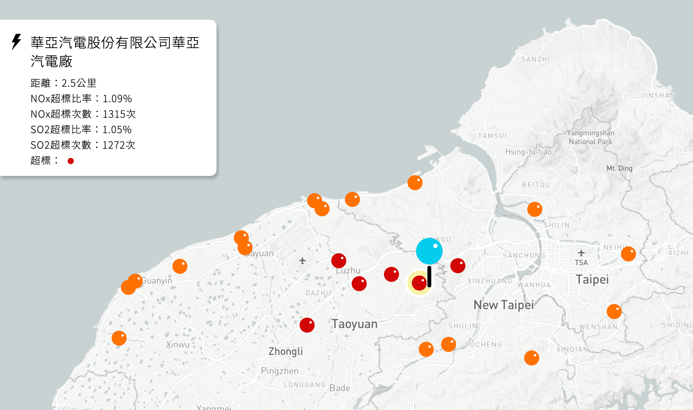
煙囪排放違規範例 2021/05 華亞氣電廠 違規統計
-
環保署 空氣品質監測網
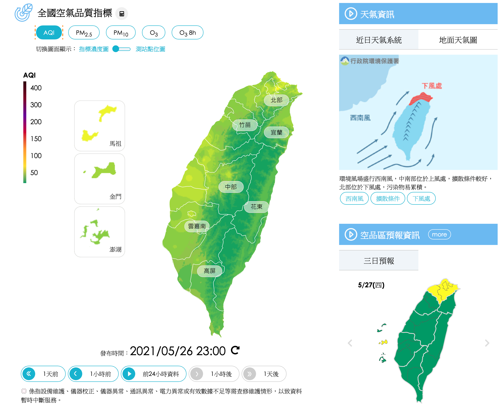
空氣品質監測 範例 2021/05/26 23:00
- 環保署 環境即時通-綠生活地圖：APP 下載
- EdiGreen 手機APP 下載 Google Play, App Store
- 環保署 愛環境：空氣品質指標 AQI, PM2.5
-
即時簡易型空氣PM2.5監測： 空氣盒子
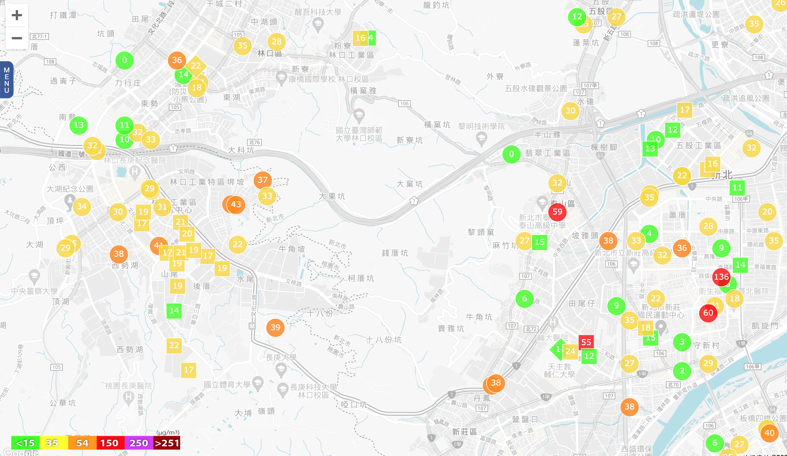
空氣盒子 範例 2021/05/26 10:10
-
微型感測器 空氣網
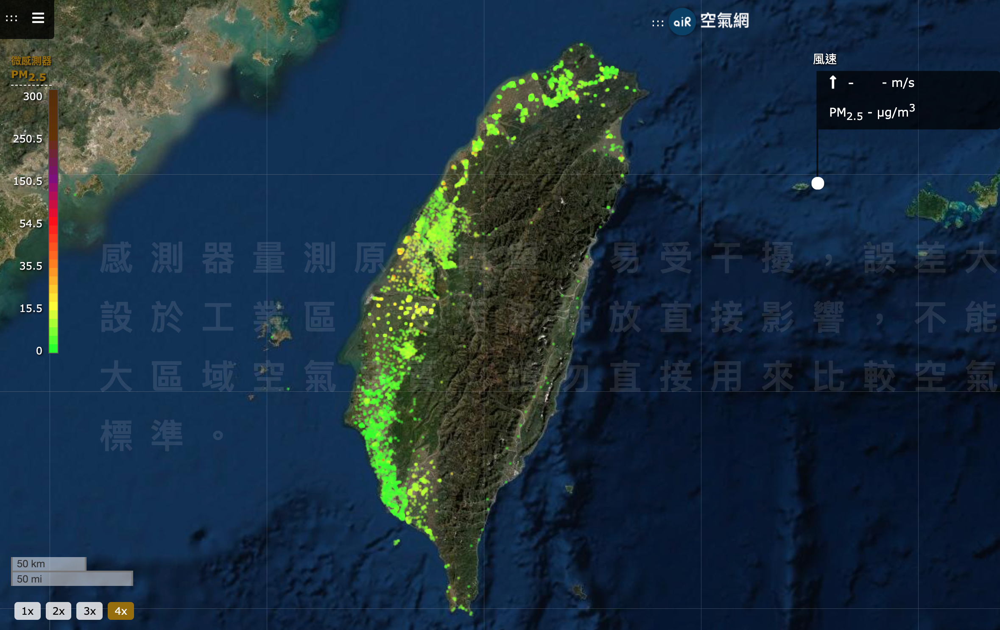
政府微型感測器 範例 2021/05/26 07:50
-
台南市微型感測器 空氣品質感測物鑾網監測資訊
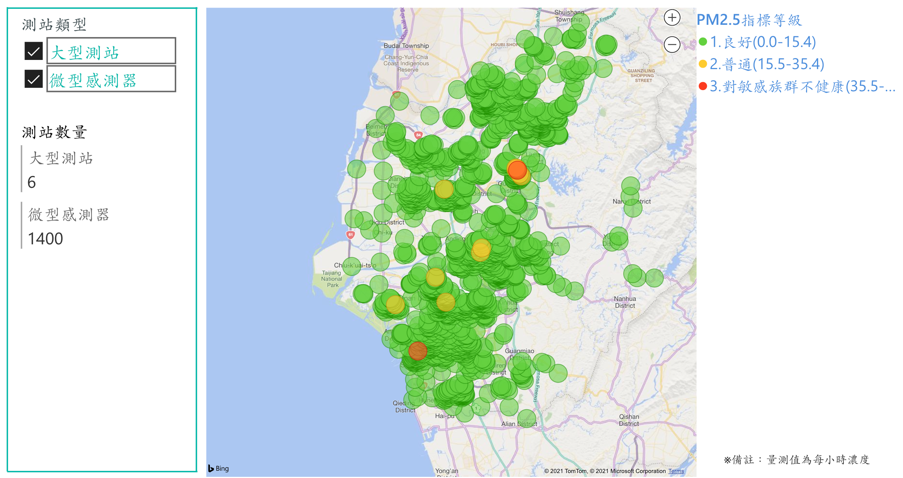
台南微型感測器 範例 2021/05/26 22:24
- 中央研究院 研之有物 自己的環境自己救！以空氣盒子監測你家附近的空汙
- 環保署固定污染源管控：固定污染源管理資訊公開平台 / 林口特定工業區（工三）/ 華亞科技園區
- 環保署 環境資料開放平臺
- 環保署 移動污染源管制網
空氣污染物簡介
-
一氧化碳 CO
-
特性：一氧化碳無色無味，比空氣輕，其來源可分為：
- 自然產生：如森林火災、甲烷氧化及生物活動等
- 人為產生：主要以化石燃料等經不完全燃燒產生，包含汽機車引擎及工業不完全燃燒所排放的廢氣。
- 影響：一氧化碳對血紅素的親和力比氧氣大得多，濃度高時可能造成人體及動物血液和組織中氧氣過低，而產生頭痛、噁心、嘔吐、頭暈、視力模糊、混亂、胸痛、虛弱、心臟衰竭等現象
-
特性：一氧化碳無色無味，比空氣輕，其來源可分為：
-
硫氧化物 SOx
-
特性：二氧化硫(SO2)是最常見的硫氧化物，無色氣體，有強烈刺激性氣味，易溶於水，其來源可分為：
- 自然產生：主要來自於火山爆發。
- 人為產生：燃燒化石燃料其硫份與空氣中氧反應所生成。易溶於水，與水可反應為亞硫酸，為引起酸雨的主要物質之一。
- 影響：以刺激呼吸系統為主，會產生鼻咽炎、咳嗽、呼吸短促、氣管炎和肺炎等。
-
特性：二氧化硫(SO2)是最常見的硫氧化物，無色氣體，有強烈刺激性氣味，易溶於水，其來源可分為：
-
氮氧化物 NOx
-
特性：氮氧化物(NOx)是由氮和氧所鍵結而成的化合物，其中常見的一氧化氮為無色無味氣體；二氧化氮為具刺激味道的赤褐色氣體，其來源可分為：
- 自然產生：來自於自然界氮循環過程，土壤和海洋的有機物分解產生。
- 人為產生：主要由燃燒所產生，為空氣中氮或燃料中氮化物氧化而成，如汽機車、飛機、內燃機及工業鍋爐等燃燒排放。
- 影響：易對人體眼睛及呼吸系統產生刺激，造成過敏、氣管炎、肺炎、肺充血及肺水腫。
-
特性：氮氧化物(NOx)是由氮和氧所鍵結而成的化合物，其中常見的一氧化氮為無色無味氣體；二氧化氮為具刺激味道的赤褐色氣體，其來源可分為：
-
揮發性有機化合物 VOCs
-
特性：VOCs是統稱在常溫下以氣態形式存在於空氣中的有機化合物，例如甲苯、甲醛等，其來源可分為：
- 自然產生：部分植物會排放。
- 人為產生：主要來自化石燃料揮發的氣體，也可能來自於一般消費產品(如油漆、清潔劑)、乾洗業、印刷業、石油煉製業及工業製程所逸散出來的氣體。
- 影響：具有滲透、脂溶及揮發等特性，易經由皮膚接觸及呼吸系統而對人體造成危害。
-
特性：VOCs是統稱在常溫下以氣態形式存在於空氣中的有機化合物，例如甲苯、甲醛等，其來源可分為：
-
臭氧 O3
- 特性：對流層大氣主要污染物之一，由氮氧化物、揮發性有機物於光化學反應下(日光照射)產生的二次污染物，具有強氧化力。
- 影響：對呼吸系統具刺激性，能引起咳嗽、氣喘、頭痛、疲倦及肺部之傷害，特別是對小孩、老人、病人或戶外運動者有較大影響。
-
PM2.5
-
特性：
- 空氣中存在許多污染物，其中飄浮在空氣中類似灰塵的粒狀物稱為懸浮微粒(Particulate Matter， PM)
- PM粒徑大小有別，小於或等於2.5微米(μm)的粒子，稱為PM2.5，通稱細懸浮微粒，單位以微克/立方公尺(μg/m3)表示
- 它的直徑還不到人類頭髮的1/28，非常微細可穿透肺部氣泡，並直接進入血管中隨著血液循環全身，故對人體及生態所造成之影響不容忽視的
-
影響：
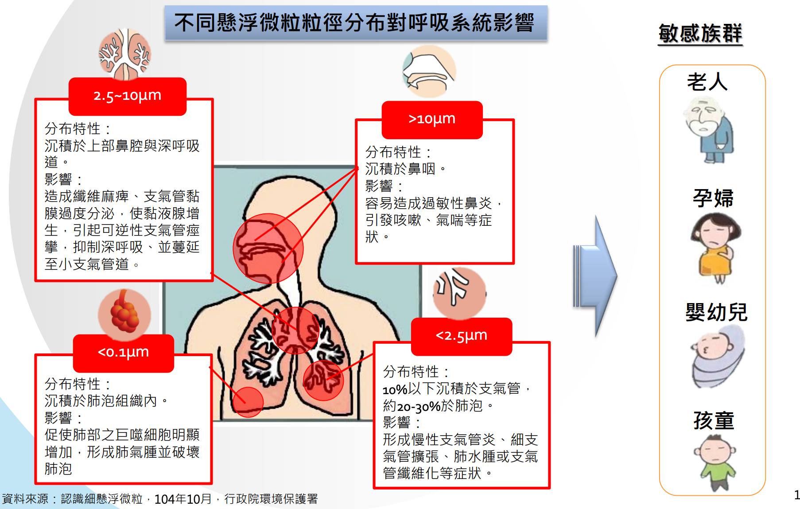
-
特性：
異味事件提報
填寫說明
- 本提報單是作為對A7重劃區社區發生“惡臭污染”的事件分析之用，非官方正式污染舉報
- 本項作業專注於A7重劃區 社區空氣品質改善中惡臭污染問題，請協助轉傳遭受惡臭污染的社區住戶。
- 龜山 牛煦庭議員: 空污報馬仔 有類似的資料收集機制。目前希望本網站專注A7 重劃區社區住戶的 “異味事件“提報。
- 本網希望長期收集 地區異味事件，資料將提供 居民舉報佐證或民意代表問政參考。 目前階段性收集結果放在 異味防制辦法/辦法草案:確定目標 網頁中。
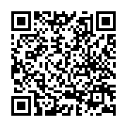